막시민과 이스핀은 오토마톤을 찾기 위하여 수수께끼 저택의 정문 앞에 도착했다.
이때, 이스핀이 빠른 탐색을 위해 걸음을 최소화하자는 의견을 내면서
미리 준비해온 '저택 1층 도면'을 보여주었다.
이동 범위를 최소화하면서 1층의 모든 방을 탐색하고
2층으로 올라가기 위해서는 어떤 문을 가장 먼저 열어야 할까?
(단, 충분한 탐색을 위해서는 해당 방을 절반 이상 이동 해야만 한다.)
(해당하는 문의 이름에 '-문'을 붙여주세요/ex. A문)
요